タップで「くわしく」が開きます（住所・電話・地図・メモ）
8月16日（日）DAY 1・移動日
セントレアから北海道へ！夜は千歳のおうちホテル
8月17日（月）DAY 2
チョコの町 → いい香りの工場 → アイヌ文化にふれて旭川へ
- 8:30
🚗 レンタカー受け取り（Minn千歳の隣ブロック）
予約済み
⚠️ 前日までにセルフチェックインを！→ 8:50 当別へ出発（約70分）
くわしく
日産レンタカー新千歳空港店／セレナ・シート3台無料・ETC＆ドラレコ
📍 千歳市柏台南2-2-5 ☎
0123-27-4123 地図
- 10:00
🍫 ロイズ カカオ＆チョコレートタウン
チケット済み
〜11:45／ワークショップは当日券売機（1,700円）
くわしく
10:00入場枠・6名（4,600円）／最終入場15:00／5歳は付き添いでワークショップ参加OKの見込み
📍 当別町ロイズタウン1-1 ☎
0570-055-612 地図
- 12:00
砂川へ移動（約60分）・車内で軽めの昼食
- 13:15
🫧 SHIRO みんなの工場
予約不要・無料
〜15:30／到着したらまずブレンダーラボの番号札を！ジャングルネットあり
くわしく
月曜は製造ライン稼働日／ラボ・カフェとも当日順のみ
📍 砂川市豊沼町54-1 ☎
0125-52-9646 地図
- 16:30
🪶 川村カ子トアイヌ記念館
要電話確認
〜17:20頃／ガイド見学＆ムックリ体験は電話予約 0166-51-2461
くわしく
⚠️ 8月の閉館が17時か18時か要確認。17時閉館ならSHIROを短縮して15:45着に前倒し（プランB）
📍 旭川市北門町11丁目
地図
- 18:00
🏨 OMO7旭川 チェックイン
予約済み
スーペリア2室（父母＋こたろう／おばあちゃん＋ほのか＋ひび）・チェックインは18:00から
くわしく
駐車場は提携タイムズ（1,000円/24h・先着）
📍 旭川市6条通9丁目 ☎
050-3134-8095 地図
- 19:00
🍽 旭川で夕食
お店えらび中
候補は「🍽 ごはん」タブに4つ（カニの天金／海鮮の大舟／回転寿しトリトン／ジンギスカン大黒屋）
くわしく
天金・大舟は個室が人気なので、行くと決めたら早めに電話予約を（天金 0166-22-3953／大舟 0166-22-2295）／トリトンは予約不可で夕方は大行列なので17時台に
8月18日（火）DAY 3
写真の町・東川 → ママをお見送り → 旭山動物園！
⏰ この日はお見送りと動物園が続くので時間がタイト。動物園は最終入園16:00・閉園17:15なので、空港を13:45には出たいところ。（もともとの表では動物園が13:15開始になっていましたが、14:30のお見送りと重なるため後ろにずらしています）
- 8:30
OMO7出発（東川町へ約30分）⚠️ 部屋1（父母＋こたろうの部屋）は荷物をまとめてチェックアウト→フロントに預けて「えぞひぐまルーム」への引き継ぎを依頼
- 9:00
📷 東川町さんぽ
予約不要
〜12:00／せんとぴゅあ → 文化ギャラリー → 道の駅「道草館」
くわしく
火曜は全施設営業見込み（ギャラリーは月曜休が多い町）
📍 せんとぴゅあ: 北町1丁目1-1／道草館: 東町1丁目1-15
地図
- 12:15
旭川空港へ（約15分）・空港で昼食
- 13:30
👋 おかあさんをお見送り保安検査場へ。みんなで「いってらっしゃい！」
- 13:45
🚗 旭山動物園へ出発（約35分）
- 14:30
✈️ おかあさん：AIRDO84便で羽田へ 本人手配済み16:15 羽田着
- 14:20
🐧 旭山動物園（5名で）
当日券OK
〜17:00／中学生以下無料・大人1,000円／入園したらまず「もぐもぐタイム」の時刻をチェック！
くわしく
夏期開園 9:30〜17:15・最終入園16:00／ベビーカー無料貸出（先着70台）／正門横の無料Pは59台のみ→民間P（500円前後）も視野に
📍 旭川市東旭川町倉沼 ☎
0166-36-1104 地図
- 17:30
🐻 OMO7へ戻る — 今夜はお部屋チェンジ！パパ＆こたろうは「えぞひぐまルーム」へ（IN15:00〜）／夕食は旭川ラーメン（候補は「🍽 ごはん」タブ）
8月19日（水）DAY 4
千歳へ戻ってサケの水族館 → 空港で飛行機見学＆夕食
- 8:30
OMO7チェックアウト・道央道で千歳へ（約2.5時間・休憩1回）
- 11:45
道の駅サーモンパーク千歳で昼食（駐車場無料・お店は「🍽 ごはん」タブ）
- 12:30
🐟 サケのふるさと千歳水族館
当日券OK
〜14:30／大人800円・小学生300円・幼児無料／ドクターフィッシュ体験と水中観察窓
くわしく
9:00〜17:00営業／asoview等の割引電子チケットあり
📍 千歳市花園2丁目312 ☎
0123-42-3001 地図
- 15:00
Minnに荷物を降ろして、そのまま車で新千歳空港へ
- 15:45
🛫 新千歳空港であそぶ
大空ミュージアム（無料）・展望デッキで飛行機見学・おみやげ下見
くわしく
※当初予定のドラえもんスカイパークは2025年7月に閉館済み。疲れていたら「新千歳空港温泉」でひとっ風呂もアリ
- 18:00
🍜 空港で夕食（候補は「🍽 ごはん」タブ）→ 18:40頃 出発
- 18:50
🚗 レンタカー返却（19:00まで）→ 徒歩でMinnへ返却前にガソリン満タンを忘れずに
- 19:15
🏠 Minn千歳 チェックイン 予約済みお風呂・最後のお洗濯・荷造り。明日は6:45出発！
8月20日（木）DAY 5・帰る日
早起きして、思い出いっぱいで帰ろう
🍽 何食べようか？
まだ決まっていない食事の候補集です。決まっているのはOMO7の朝食（8/18・8/19の朝）だけ。各食事に4〜8軒ずつ候補を出しました。写真は横にスワイプすると何枚か見られます。⭐は「迷ったらこれ」のおすすめ。家族で相談して決めましょう。
☀️ 朝ごはんメモ：8/17の朝はMinnのキッチンで簡単に（前の夜にコンビニ・スーパーで調達がおすすめ）／8/18・8/19の朝はOMO7の朝食ビュッフェ（予約済み）／8/20の朝は空港で（いちばん下の候補へ）
8/16（日）よる千歳｜19時ごろ・とうちゃく日
つかれている日は「ラクに食べる」が正解。こたろうが寝ちゃってもOKなプランも用意
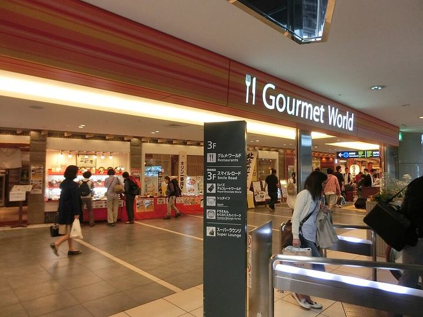
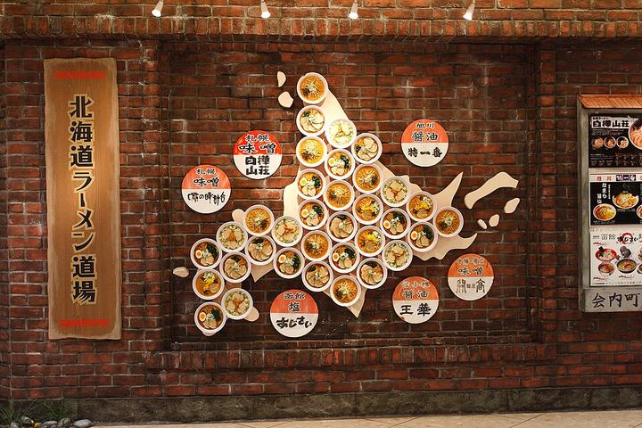
新千歳空港で食べてから移動 ⭐ 迷ったらこれ
18:45着→そのまま3Fのグルメゾーンへ。回転寿司もラーメンも20時ごろまで営業しているので、食べてから19:40のタクシーが一番スムーズ。
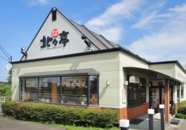
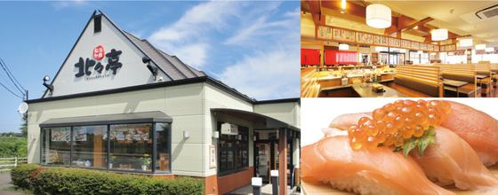
北々亭 千歳店
職人が目の前で握る本格派の人気回転寿司。千歳市街にあり、明日以降に回してもOKな地元の実力店。
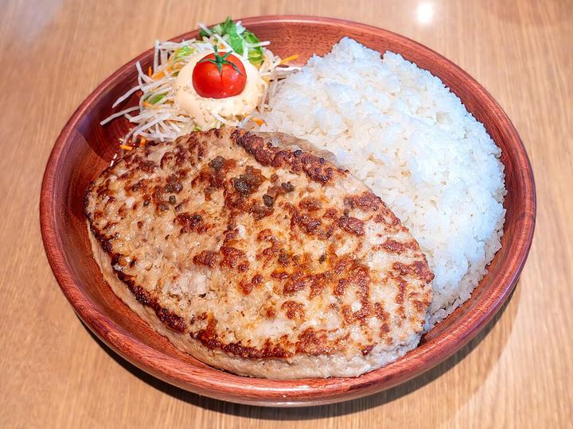
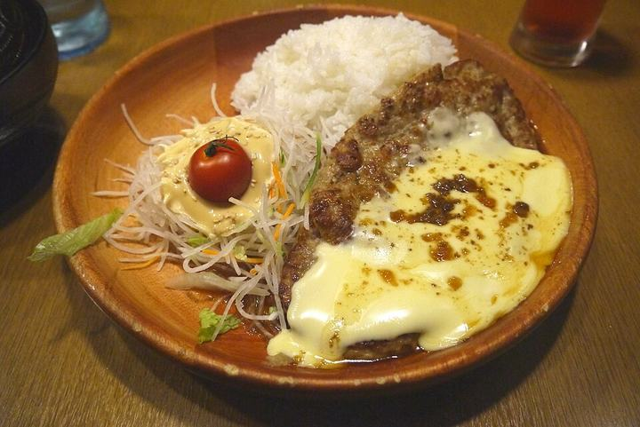
びっくりドンキー 千歳店
深夜まで営業のハンバーグ定番店。お子さまメニューが充実していて、遅い時間に子連れでも気楽。
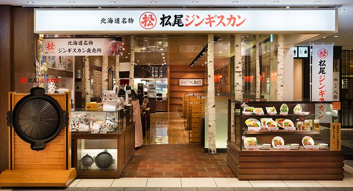
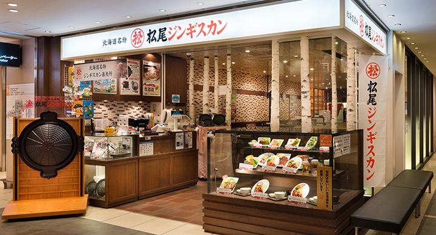
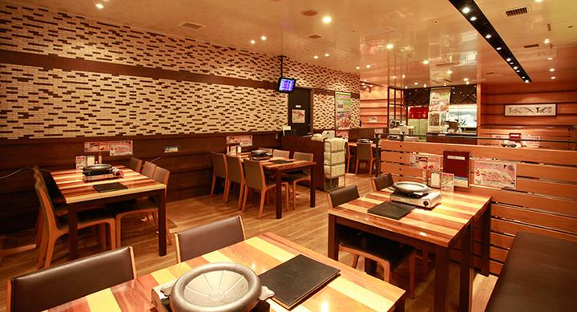
松尾ジンギスカン 新千歳空港店
空港3Fグルメワールドの人気店。創業70年の秘伝ダレのラム。テイクアウトの「ジン丼」を買ってお部屋で食べる手も。
お部屋ごはん
空港で空弁・おにぎり・お惣菜を買ってMinnへ。キッチン＆電子レンジ付きのお部屋なので、子どもが力尽きた時の最強プラン。
8/17（月）ひる当別→砂川｜車内で軽めの昼食の日
移動する国道12号エリアは実はスイーツ激戦区。「軽めごはん＋おやつ」作戦で
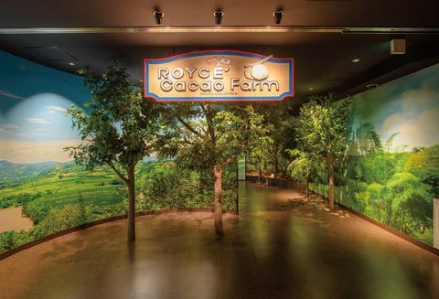
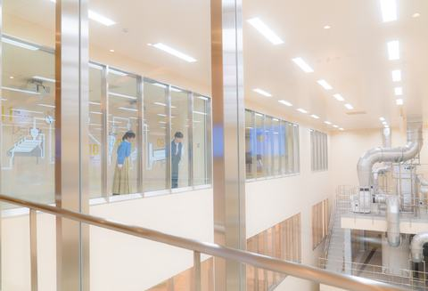
ロイズタウン工場直売店
チョコタウン見学のついでに。焼きたてパンとソフトクリームで軽めランチに（人気のパンは売り切れ注意）。
かばと製麺所
田んぼの中の一軒家に行列ができる手打ちうどんの名店。朝採れ野菜の天ぷらも看板。ロイズタウンと同じ当別町・車約10分。夏は営業期間内（4〜11月のみ）。
セイコーマート ホットシェフ ⭐ 迷ったらこれ
北海道コンビニの王様。できたてのカツ丼・おにぎり・フライドチキンは車内ごはんの大正解。ルート上にたくさんある。
SHIROカフェ（みんなの工場内）
見学するSHIRO工場の中にある石窯ピザのカフェ。焼きたてピザと限定スイーツで、見学とランチが一度に完了する合理プラン。
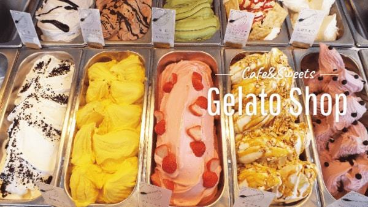
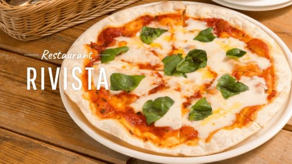
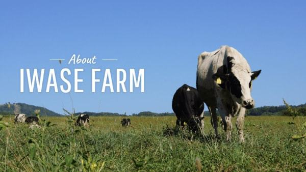
岩瀬牧場 ジェラートショップ
しぼりたてミルクのジェラートは国際食品展FoodEx受賞の実力派。牧場のピザレストラン「リヴィスタ」併設でランチにも使える。砂川市内。
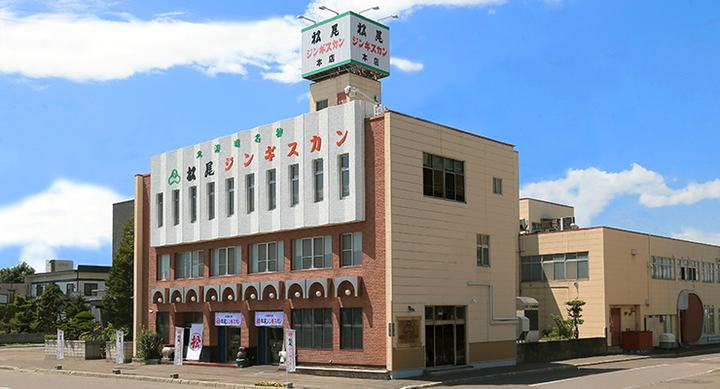
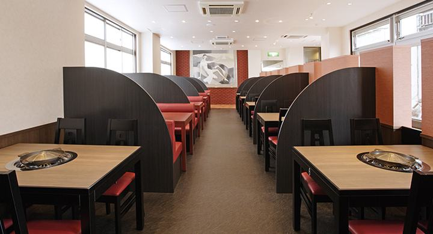
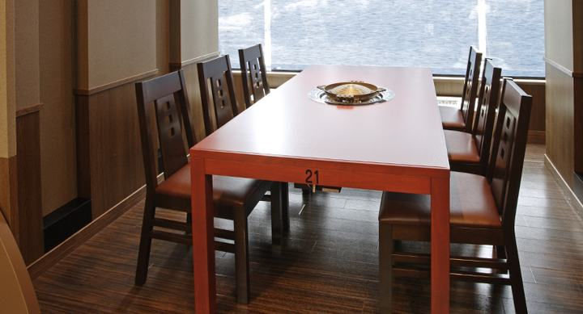
松尾ジンギスカン 滝川本店
ジンギスカン発祥の店。砂川のとなり滝川、国道12号沿いなのでルート上。がっつり食べたい日はここ。
北菓楼 砂川本店
シュークリームとソフトクリームの名店。SHIRO工場から車ですぐなので、工場のあとのおやつ休憩に最高。
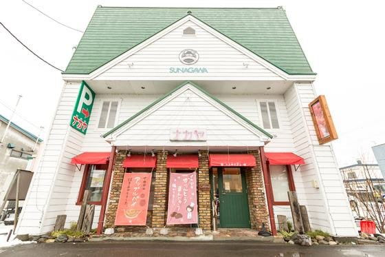
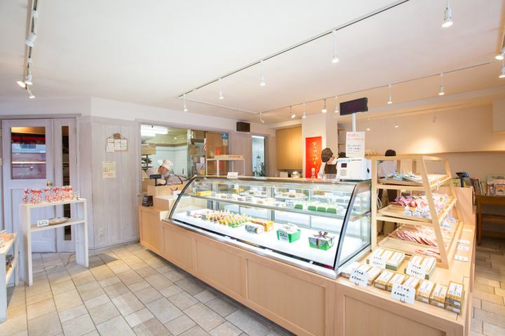
ナカヤ菓子店
砂川名物・焼きたてアップルパイの人気店。地元で愛される「すながわスイーツロード」の代表格。
8/17（月）よる旭川｜OMO7周辺
3世代で行きやすい「個室・お座敷・回転寿司」を中心にセレクト
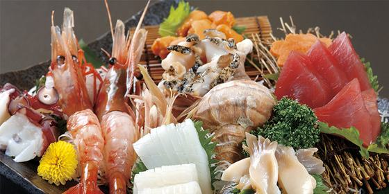
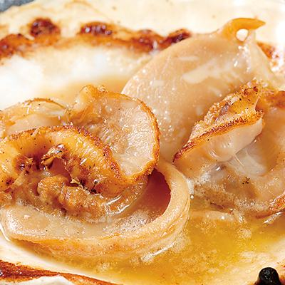
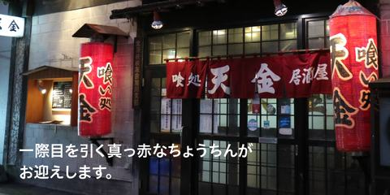
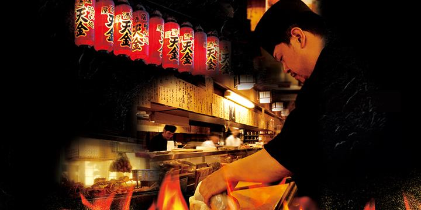
居酒屋 天金 ⭐ 迷ったらこれ
毛ガニと掘りごたつ個室の老舗。お寿司や天ぷらもあって子連れでも安心。OMO7から徒歩7〜8分。
お座敷居酒屋 大舟
創業40年、道産魚介一筋の海鮮居酒屋。お座敷個室があるので2歳連れでもゆったり。旭川駅から徒歩9分。
回転寿しトリトン 旭神店
北海道の回転寿司でトップクラスの人気店。予約不可で夕方は大行列になるので、17時台に車で直行（約10分）が吉。
成吉思汗 大黒屋
行列のできるジンギスカンの超人気店。煙とにぎやかさはあるので、おばあちゃんと相談して元気があればチャレンジ！
8/18（火）ひる東川→旭川空港｜お見送りの前に
ママのお見送り（14:30発）から逆算して、サッと食べられるところを
旭川空港内で昼食 ⭐ 迷ったらこれ
ターミナル内のレストラン・売店で空港ごはん。お見送り前にみんなで一緒に食べるなら、ここが一番確実。
MILK STAND esperio（空港2F）
北海道牛乳のソフトクリームやドリンクのテイクアウト店。軽く済ませたいときのデザート担当。
そば処 蓬（よもぎ）
空港から車で約13分の手打ちそば人気店。おばあちゃん満足度が高いお店。時間に余裕があれば。
そば処 笹一
写真の町・東川で長く愛されるそば処。さんぽの締めのお昼にちょうどいい。旭川空港へは車で約15分なのでお見送りにも間に合う。
旭山動物園の中で食べる
お見送りのあと入園して、園内の食堂・売店でザンギやラーメン。子どもたちはこれが一番うれしいかも。
8/18（火）よる旭川｜ラーメンの夜
OMO7から歩けるエリアに名店ぞろい。動物園帰りに気楽に一杯
梅光軒 本店 ⭐ 迷ったらこれ
旭川ラーメン大賞受賞の代表格。豚骨×魚介のWスープ醤油。買物公園エリアでアクセスも良し。
らぅめん青葉 本店
1947年創業、旭川ラーメンの元祖ダブルスープ。駅前で行きやすい老舗。
らーめん山頭火 本店
まろやかな塩とんこつで、子どもにも食べやすい味。全国区になった名店の本店はここ旭川。
らーめんや天金
昔ながらの正油ラーメンの老舗。豚骨ベースの黄金色スープは「これぞ旭川」の一杯。カニの居酒屋天金と同じ名前だけど別のお店。
あさひかわラーメン村
人気店8軒が集まる施設。家族で違う店の味を食べ比べできるので、好みが割れても解決。動物園から車で約20分。
蜂屋 五条創業店
焦がしラードの真っ黒スープが名物の老舗。レトロな「5・7小路ふらりーと」内。夜は早じまい（〜19:50）に注意。
8/19（水）ひる道の駅サーモンパーク千歳
フードコートで好きなものをそれぞれ（水族館はおとなり）
TAMAGOYA 親子丼とざんぎ ⭐ 迷ったらこれ
ふわとろ親子丼と北海道ザンギ。子どもチームの本命はこちら。
海鮮丼屋 とと丸食堂
どーんと盛られた海鮮丼。おとなチームはこちらでどうぞ。
ふるさとラーメン食堂 ちとせがわ
迷ったらラーメン。家族で取り分けやすい定番メニュー。
ベーカリー空とメロン ＆ いちごスイーツ
焼きたてパンと「いちごBonBonBERRY」のスイーツ。食後のデザートと翌朝のパン調達にも。
8/19（水）よる新千歳空港｜18:00〜18:40の勝負メシ
レンタカー返却（19:00）から逆算。3Fのグルメゾーンに集合
グルメ回転ずし 函太郎 ⭐ 迷ったらこれ
空港3Fの人気回転寿司（L.O.20:00）。行列ができるので18時前の入店がおすすめ。
えびそば一幻
「北海道ラーメン道場」の行列筆頭。えびの香りの濃厚スープは並ぶ価値あり。
エアポートレストラン by ROYAL HOST
ゆっくり座れるファミリーレストラン。疲れた2歳がいても安定・確実なプラン。
松尾ジンギスカン 新千歳空港店
空港3F。ジンギスカンは北海道の締めにぴったり。フードコート限定のテイクアウト「ジン丼」もあり。
スープカレー lavi 新千歳空港店
札幌の人気スープカレーの空港店（3F）。名物のえび焙煎スープが選べて、辛さ調整できるから子どもと分けやすい。
ドライブインいとう 豚丼名人
十勝・音更の有名店の空港支店（3F）。炭火香る豚丼は子どもも大人もペロリ。19時まで営業。
一灯庵（そば）
打ちたてそばの落ち着いたお店（3F）。旅の締めに、おばあちゃんとしっぽり。
8/19（水）おやつ新千歳空港｜ソフトクリームめぐり
旅の最終盤は「北海道の甘いもの」で締めくくり。夕食の前後にどうぞ
雪印パーラー ⭐ 迷ったらこれ
名物ソフトクリームと、昭和天皇のために作られたアイス「スノーロイヤル」。空港内に複数店舗。
きのとや 新千歳空港店
道産マスカルポーネ入り「極上牛乳ソフト」。コーンまで北海道産小麦のこだわり。
ロイズ 新千歳空港店
2日目に行くチョコタウンの空港店。限定商品とチョコソフトも。おみやげの買い足しにも便利。
8/20（木）あさ新千歳空港｜7:00すぎ・9:20発
朝7時から開いているお店は意外とある。時間が読めない朝は「買って待合で」も保険に
朝市食堂（1F） ⭐ 迷ったらこれ
朝7:00から営業。注文してから握ってくれるおにぎりと海鮮の朝ごはん。
エアポートレストラン by ROYAL HOST
7:20からモーニング営業。子連れで一番ゆっくり座って食べられる。
北の味覚 すず花 ゲート店
保安検査を通ったあとのエリアで朝7:00から。搭乗直前まで粘れるのが強い。
空弁・パンをテイクアウト
佐藤水産のおにぎりや空弁を買って搭乗待合で。搭乗までの時間が読めない朝の保険プラン。